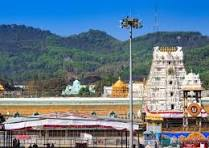
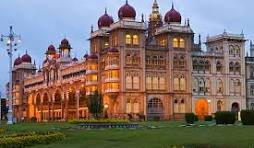
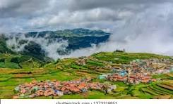

Place name: Tirupati
Information: Tirupati is a famous pilgrimage city in Andhra Pradesh, known for Sri Venkateswara Temple on Tirumala Hill and a strong spiritual atmosphere.
Major Attractions:

Place name: Mysore
Information: Mysore (Mysuru) is famous for its royal heritage, Mysore Palace, Dussehra celebrations, silk sarees, and sandalwood products.
Major Attractions:

Place name: Ooty
Information: Ooty (Udhagamandalam) is a hill station in the Nilgiri Hills, Tamil Nadu, known for tea gardens, cool climate, and scenic beauty.
Major Attractions: